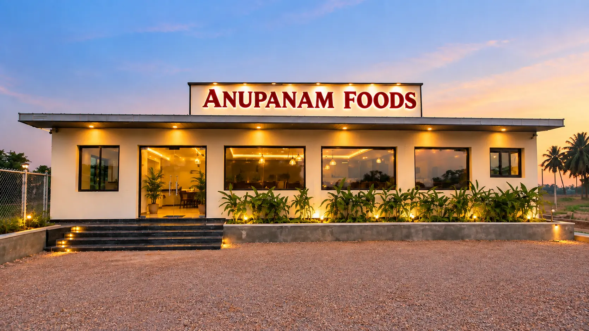

Authentic South Indian Vegetarian Food in Madurai
ANUPANAM FOODS is a vegetarian family restaurant in Madurai serving fresh and delicious South Indian food, dosas, meals, juices and beverages. Enjoy a comfortable dining experience with dine-in, takeaway and convenient online food ordering.
ANUPANAM FOOD GALLERY
Frequently Asked Questions
1. What type of food does Anupanam Restaurant serve?
Anupanam Restaurant serves a variety of freshly prepared and delicious vegetarian South Indian dishes, making it a great choice for families, friends and food lovers.
2. Does Anupanam Restaurant offer online food ordering?
Yes. Customers can conveniently explore our menu and order their favourite dishes online.
3. Is Anupanam Restaurant suitable for families?
Yes. Anupanam Restaurant provides a comfortable and welcoming dining experience for families and groups.
4. Can I reserve a table at Anupanam Restaurant?
Yes. Customers can contact Anupanam Restaurant to check table availability and make a reservation.
5. Where is Anupanam Restaurant located?
Anupanam Restaurant is located at Bharathi Infinity Hospital Campus, Valarnagar Backside, Trichy - Madurai Highway, Othakadai, Madurai - 625107.